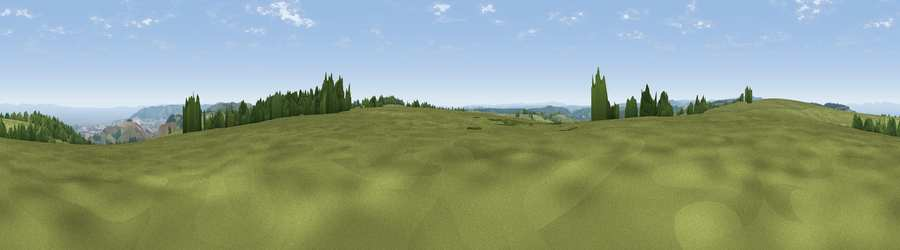

Viewpoint near Roadwater
#7111 in England · top 18% of its area beats it · near Roadwater · access?Where it is
The exact computed spot (ST 01150 34575). Click the marker for map links.
Public access: no public right of way or access land is recorded at this exact spot — it may be on private land. Computed from Natural England's CRoW access layer and OpenStreetMap rights of way — not the legal definitive map. Always verify locally.
The view, rendered

A 360° render of this exact spot computed from the terrain model, tree cover and land cover — summer colours, afternoon light, calibrated against photographs of famous viewpoints. Real trees, hedges and buildings will differ in detail.
The panorama
Grey silhouette: terrain skyline in each direction (720 bearings, Earth curvature and refraction included). Dashed green: skyline with trees (+15 m) and buildings (+8 m) as obstacles. Blue strip: how far the ground is visible on each bearing.
Where the view opens
Wedge length = distance to the farthest visible ground on that bearing (vegetation-aware). Rings at 10, 25 and 50 km.
What fills the view
70% grassland · 13% water · 12% woodland · 5% cropland ·
Angular shares of the visible panorama (visual magnitude), not map area. Landscape diversity 0.41 (0–1 Shannon).
Key numbers
More beautiful places nearby
The staircase of upgrades: each row has a higher view potential than everything closer. Driving times are estimates from straight-line distance, calibrated against real road routing — check an actual route before setting out.
| Place | Direction | Drive | Score |
|---|---|---|---|
| Viewpoint near Roadwater | E · 1 km | ~3 min | 72.2 |
| Viewpoint near Luxborough | WNW · 1 km | ~4 min | 73.0 |
| Viewpoint near Roadwater | NNE · 2 km | ~5 min | 82.9 |
| Viewpoint near Roadwater | N · 4 km | ~9 min | 85.2 |
| Viewpoint near Luxborough | NNW · 6 km | ~13 min | 85.5 |
| Viewpoint near West Quantoxhead | ENE · 13 km | ~24 min | 87.8 |
| Viewpoint near West Quantoxhead | NE · 13 km | ~24 min | 88.7 |
| Holdstone Hill | WNW · 41 km | ~61 min | 90.2 |
51.10193, -3.41319 · source: screening · position refined by local search. Computed location — check access rights before visiting.